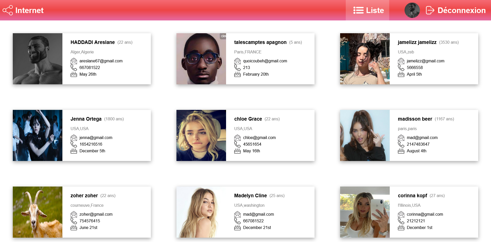
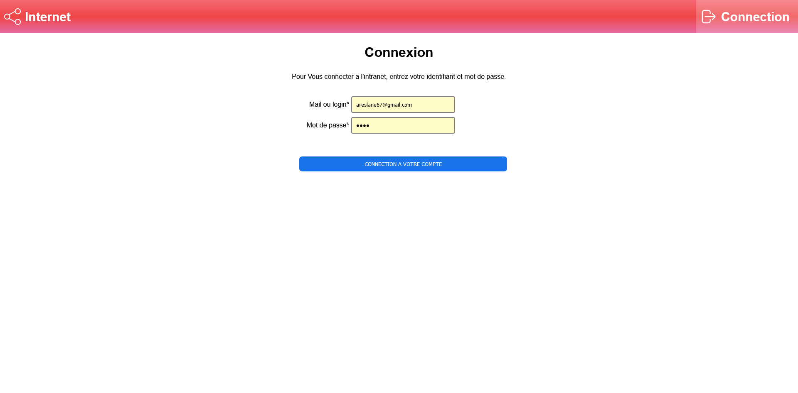
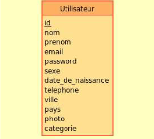

Présentation

Contexte
Vous travaillez à la MDL de taille moyenne en pleine expansion, et faites partie du pôle Technique.
Pour donner suite au récent recrutement de nombreux collaborateurs, la direction souhaite créer une plate-forme accessible en interne pour faciliter et encourager les relations entre collaborateurs.
En tant que développeur, si vous accepté la mission, vous avez la charge de développer le Front de la plateforme Intranet également une partie Back pour la gestion des requêtes coté serveur.
Maquette
- 

- 
réalisation
Stack technique :
Modélisation Back : BDD team / table collaborateurs / Model Conceptuel de données , model logique et schématisation Front : HTML, CSS & PHP
Présentation du fonctionnement de la plateforme
Une fois connecté, l'utilisateur arrive sur la page d'accueil qui lui présente un de ses collaborateurs au hasard, Le bouton "Dire bonjour à quelqu'un d'autre" doit permettre d'afficher un autre collaborateur au hasard. L'utilisateur peut via le menu se déplacer sur la page de listing des collaborateurs de la société. Les collaborateurs s'affichent sous forme de Card, avec toutes leurs caractéristiques, La liste doit se rafraîchir instantanément. L'utilisateur doit également pouvoir accéder à une page de modification de ses informations personnelles (incluant le login/mot de passe) en cliquant sur son image de profil dans le header Enfin, l'utilisateur doit pouvoir se déconnecter. Après déconnexion, aucune des pages précédentes (home, listing) ne sont accessibles
Base de données
Aspect technique
Les technologies autorisées sont : html5 css3, js et php orienté objet (Classes et instances) Framework : Laravel Police de caractères : ‘Open Sans’, sans-serif Iconographies obligatoires de votre choix La couleur des thèmes doivent être indexée dans des variables css Le code HTML généré doit être valide selon les normes du W3C et tester également, pour les spécificités de la WAI et du WCAG (accessibilité) Votre rendu sera publié sur un dépôt Github. Celui-ci doit avoir une structure logique, contenir un readme.md avec présentation du projet et Un fichier «. Gitignore » si besoin
Synthèse des réalisations professionnelles
Gérer le patrimoine informatique
- Exploiter des référentiels, normes et standards adoptés par le prestataire informatique :
Projet réalisé à partir d'une maquette fournie.
- Gérer des sauvegardes :
Utilisation de GitHub afin de garder une backup du projet. | Usage d'une base de données afin de sauvegarder les données saisies.
- Vérifier le respect des règles d’utilisation des ressources numériques :
Hachage cryptographique des mots de passes saisis lors de l'inscription.
Développer la présence en ligne de l’organisation
- Participer à la valorisation de l’image de l’organisation sur les médias numériques en tenant compte du cadre juridique et des enjeux économiques
Site web ayant pour but la valorisation d'un particulier.
- Référencer les services en ligne de l’organisation et mesurer leur visibilité.
Déploiement du service en ligne depuis GitHub.
Travailler en mode projet
- Analyser les objectifs et les modalités d’organisation d’un projet
Demandes précises des fonctionnalités devant être intégrées à la page.
- Planifier les activités
Emploi du temps précis, requérant la complétion de l'objectif demandé au temps venu.
- Évaluer les indicateurs de suivi d’un projet et analyser les écarts
Projet découpé en itération afin de constater l'évolution et d'avoir une deadline constamment proche ainsi qu'un suivi de notre professeur.